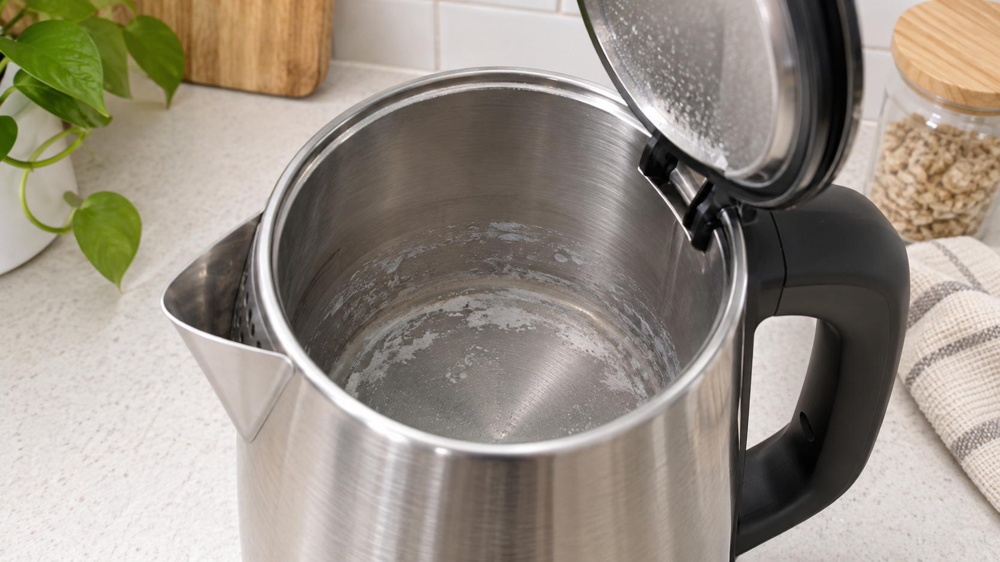

전기포트 바닥의 하얀 얼룩은 물속 미네랄이 남은 물때인 경우가 많습니다. 플러그를 뽑고 완전히 식힌 뒤 제조사가 허용한 구연산 세척법을 사용하고, 전기 접점과 본체 외부를 물에 담그지 마세요.
| 상태 | 판단 |
|---|---|
| 하얗고 분필 같은 막 | 미네랄 물때 가능 |
| 갈색 점과 금속 패임 | 부식 여부 점검 필요 |
| 검은 가루·탄 냄새 | 사용 중단, 전기부 점검 |
철수세미로 긁거나, 표백제와 산성 세정제를 섞거나, 받침대와 접점을 물에 담그지 마세요.
바닥 코팅이 벗겨졌거나 누수, 자동 전원 차단 실패, 탄 냄새가 있으면 사용을 중단하세요. 주방 가열기 문제는 인덕션 문제 해결 글도 참고할 수 있습니다.
세척제 종류와 농도는 제품별 제조사 사용설명서를 우선 따르세요.